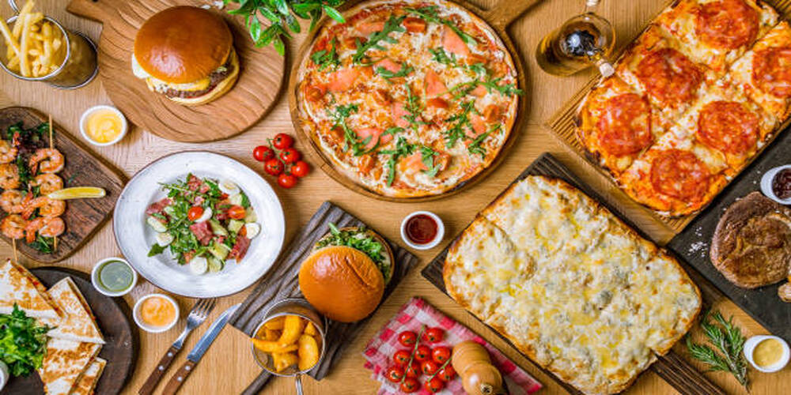

RESTAURANT

- Restaurants are classified or distinguished in many different ways. A restaurant is a
business that prepares and serves foodand drinks to customers. Meals are generally.
- Restaurants vary greatly in appearance and offerings, including a wide variety
of cuisines and service models ranging from inexpensive fast-food restaurants.
- Cafeteriasto mid-priced family restaurants, to high-priced luxury establishments.The
earliest modern-format"restaurants" to use that word in Paris were the establishments.
- The primary factors are usually the food itself the cuisine (e.g. Italian, Korean, Chinese,
Japanese, Indian, French, Mexican, Thai) or the style of offering (e.g. tapas, a sushi
Food
Food is any substance consumed to provide nutritional support for an organism. Food is usually of plant, animal, or fungal origin, and contains essential nutrients, such as carbohydrates, fats, proteins, vitamins, or minerals. The substance is ingested by an organism and assimilated by the organism's cells to provide energy, maintain life, or stimulate growth. Different species of animals have different feeding behaviours that satisfy the needs.
Room Service

Room service or in-room dining is a hotel service enabling guests to choose items of food and drink for delivery to their hotel room for consumption. Room service is organised as a subdivision within the food and beverage department of high-end hotel and resort properties. It is uncommon for room service to be offered in hotels that are not high-end, or in motels. Room service may also be provided for guests on cruise ships.Room service may be provided.